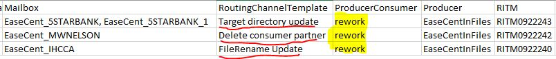
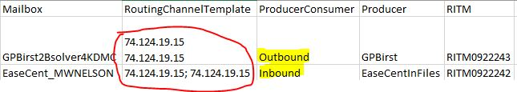

Neutron
Neutron
Choose a file to raise CR
Guidelines to follow while raising CRs
1. Normal new consumer builds

Submit as usual the file you submit in staging area for the build. Above higlighted columns are important for a successful run, if any of the below columns/values missed it will throw runtime error. (It's case sensitive)
2. Rework builds
Make sure column "ProducerConsumer" has "rework" mentioned and column "RoutingChannelTemplate" should have the respective changes you made eg., (directory updated, consumer removed etc., Nothing more) if multiple consumers are altered (eg., EaseCent_5STARBANK & EaseCent_5STARBANK_1) mention in the same cell don't split it as two rows.
3. Network CRs
Network CRs should be separate sheet, while Rework/new consumer CRs can be raised together in a single sheet. Mainly because the nature/severity of Network CRs & change duration window. Make sure to fill details as highlightd in above image. This will not include Middleware CR for the consumer (if in case it's a new build), this will only raise network ctask. Make sure to mention inbound/outboound in column "ProducerConsumer" and all the IPs in "RoutingChannelTemplate" column. MAKE SURE FIREWALL IS TURNED ON AT RIGHT TOP IN MAIN WINDOW
General Instruction
- If you have more than one sheet of CRs to be raised make sure to raise one after one and also after each CR make sure to clear the fields using the CLEAR FIELD option at the right top
- If you encounter any error durinng run time or at the middle,
- Go back to outlook, validate if any CRs are raised
- If you find some of the CRs are raised some wasn't
- Kindly have one's which were raised removed from the sheet and resubmit the updated sheet again
- Make sure to clear fields before resubmitting the updated sheet